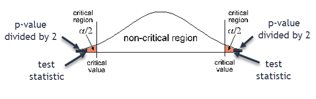

4.3 Hypothesis Testing for Means
Realistically, if we are testing a claim about the mean of a population, we do not know the standard deviation of the population. Therefore, we must use the student t-distribution when hypothesis testing for means.
StatCrunch → Stats → T Stats → One Sample → With Summary (or With Data)
- Changing a Tire: The length of time to change a tire is normally distributed. A random sample of ten tire changes is taken with a mean of 22.63 minutes and a standard deviation of 2.98 minutes. Use a 0.05 significance level to test the claim that the mean time to change a tire is less than 25 minutes.
- Put a box around the statement of the claim in the problem.
The mean time to change a tire is less than 25 minutes. - Claim:
\(\mu < 25\) - \(H_0\):
\(\mu \geq 25\) - \(H_A\):
\(\mu < 25\) - Type of Test:
Left-tailed test - Draw a graph of the critical/rejection region

- Significance Level:
\(\alpha =0.05\) - Underline the sample mean and sample standard deviation
sample mean 22.63 minutes and sample standard deviation 2.98 minutes - p-value:
0.0165 - Decision about the null:
Since 0.015 is less than 0.05 we reject the null hypothesis - Concluding statement:
There is sufficient evidence to support the claim that the mean time to change a tire is less than 25 minutes.
Claim has \( =,\ \ \le,\ \ \geq \) Claim has \( \neq,\ <,\ \ > \) Claim is null hypothesis Claim is alternate hypothesis Reject the null hypothesis “There is sufficient sample evidence to reject the claim that…” “There is sufficient sample evidence to support the claim that…” Fail to reject the null hypothesis “There is not sufficient sample evidence to reject the claim that…” “There is not sufficient sample evidence to support the claim that…”
- Put a box around the statement of the claim in the problem.
- Age of Cars: The mean age of cars driven by Pellissippi State students is seven years. The Dean of Students claims that this is an accurate statement for his students. A random sample of 31 cars in the East Parking Lot on campus showed a mean age of 8.1 years with a standard deviation of 5.1 years. Test the Dean’s claim at the 0.01 significance level.
- Put a box around the statement of the claim in the problem.
The mean age of car driven by PSCC students is 7 years. - Claim:
\(\mu = 7\) - \(H_0\):
\(\mu = 7\) - \(H_A\):
\(\mu \neq 7\) - Type of Test:
Two-tailed test - Draw a graph of the critical/rejection region

- Significance Level:
\(\alpha =0.01\) - Underline the sample mean and sample standard deviation
sample mean 8.1 years and sample standard deviation 5.1 years - p-value:
0.2392 - Decision about the null:
Since 0.2392 is greater than 0.01 we fail to reject the null hypothesis
- Concluding statement:
There is not sufficient sample evidence to reject the claim that the mean age of cars driven by PSCC students is 7 years.
Claim has \( =,\ \ \le,\ \ \geq \) Claim has \( \neq,\ <,\ \ > \) Claim is null hypothesis Claim is alternate hypothesis Reject the null hypothesis “There is sufficient sample evidence to reject the claim that…” “There is sufficient sample evidence to support the claim that…” Fail to reject the null hypothesis “There is not sufficient sample evidence to reject the claim that…” “There is not sufficient sample evidence to support the claim that…” - Put a box around the statement of the claim in the problem.
- Class Size: You receive a brochure from a large university. The brochure indicates that the mean class size for full-time faculty is fewer than 31 students. You want to test this claim. You randomly select 18 classes taught by full-time faculty and determine the class size of each. The results are shown in the table below. At a 0.01 significance level, can you support the university’s claim?
34 26 28 33 32 37 28 25 29 26 28 37 30 31 25 29 31 28 - Claim:
\(\mu < 31\) - \(H_0\):
\(\mu \geq 31\) - \(H_A\):
\(\mu < 31\) - Type of Test:
Left-tailed test - Draw a graph of the critical/rejection region
- p-value:
0.0973 - Decision about the null:
Since 0.0973 is greater than 0.01 we fail to reject the null hypothesis. - Concluding statement:
There is not sufficient sample evidence to support the claim that the mean class size for full-time faculty is fewer than 31 students.
Claim has \( =,\ \ \le,\ \ \geq \) Claim has \( \neq,\ <,\ \ > \) Claim is null hypothesis Claim is alternate hypothesis Reject the null hypothesis “There is sufficient sample evidence to reject the claim that…” “There is sufficient sample evidence to support the claim that…” Fail to reject the null hypothesis “There is not sufficient sample evidence to reject the claim that…” “There is not sufficient sample evidence to support the claim that…” - Claim:
- The critical value is the z-score associated with the significance level α. It defines the critical region.
- The test statistic is the z-score associated with the p-value. The test statistic is a standardized value calculated from the sample. If the test statistic is in the critical region, then we reject the null hypothesis.
- Bob can eat an apple in 4 minutes. Sophie claims he's a slow eater and that the average person can eat an apple faster than Bob. A random sample of 25 apple eaters takes an average of 3.8 minutes to eat an apple with a standard deviation of 2.1 minutes. Test Sophie's claim using a 0.05 significance level.
- Put a box around the statement of the claim in the problem.
The average time it takes to eat an apple is less than 4 minutes. - Claim:
\(\mu < 4\) - \(H_0\):
\(\mu \geq 4\) - \(H_A\):
\(\mu < 4\) - Type of Test:
Left-tailed - Draw a graph of the critical/rejection region
- Significance Level:
\(\alpha =0.05\) - Underline the sample mean and sample standard deviation
sample mean is 3.8 minutes and sample standard deviation is 2.1 minutes - p-value: ________
0.3191 - i. Critical value (label this on your graph):
-1.71 - Test statistic (label this on your graph):
If the test statistic is in the critical region, then reject the null hypothesis.
-0.48 - Decision about the null:
Fail to reject the null hypothesis
- Concluding Statement:
There is not sufficient sample evidence to support the claim that the mean time to eat an apple is less than 4 minutes.
Claim has \( =,\ \ \le,\ \ \geq \) Claim has \( \neq,\ <,\ \ > \) Claim is null hypothesis Claim is alternate hypothesis Reject the null hypothesis “There is sufficient sample evidence to reject the claim that…” “There is sufficient sample evidence to support the claim that…” Fail to reject the null hypothesis “There is not sufficient sample evidence to reject the claim that…” “There is not sufficient sample evidence to support the claim that…”
- Put a box around the statement of the claim in the problem.
- The Cell Phone Market Research Company conducted a national survey in 2010 and found that 30% of households in the United States owned at least three cell phones. Michele, a statistics student, decides to replicate this study where she lives. She conducts a random survey of 150 households in her town and finds that 53 own at least three cell phones. Is this strong evidence that the proportion of households in Michele’s town that own at least three cell phones is more than the national percentage? Test at a 5% significance level.
- Claim in words:
The proportion of households in Michele’s town that own at least three cell phones is more than the national percentage - Claim in symbols:
\(p>0.30\) - Type of hypothesis test (Proportion – Proportion Stats or Mean – T Stats):
Proportion-Proportion Stats - What is your evidence to know the type of hypothesis test?
Percentages and proportion of households, no mean or standard deviation given
- Claim in words:
- A class of statistics students argue that an exam was unfairly difficult. They claim the mean score is below 65. A statistics instructor thinks the mean score is right at 65. The students pool their exam scores and randomly sample 10 of them. The sample scores are 62, 54, 64, 58, 70, 67, 63, 59, 69, 64. The students test their claim using a 5% level of significance.
- Claim in words:
The mean score is below 65. - Claim in symbols:
\(\mu < 65\) - Type of hypothesis test (Proportion – Proportion Stats or Mean – T Stats):
Mean-T Stats - What is your evidence to know the type of hypothesis test?
A mean is given in the problem.
- Claim in words:
- An engineer measured the Brinell hardness of 25 pieces of ductile iron. The sample mean was 172.5 and the sample standard deviation was 10.3. The engineer hypothesized that the mean Brinell hardness of all such ductile iron pieces is greater than 170. Test this claim using a significance level of 0.01.
- Claim in words:
The mean Brinell hardness of all such ductile iron pieces is greater than 170.
- Claim in words:
- Claim in symbols:
\(\mu > 170\) - Type of hypothesis test (Proportion – Proportion Stats or Mean – T Stats):
Mean-T Stats - What is your evidence to know the type of hypothesis test?
A mean is given in the problem. - A certain soft drink bottler claims to have a majority of the soft drink market. In fact, the bottler thinks less than 20% of its customers drink another brand of soft drink on a regular basis. A random sample of 100 customers yielded 18 who did in fact drink another brand of soft drink on a regular basis. Do these sample results support the bottler’s claim? (Use a level of significance of 0.05.)
- Claim in words:
Less than 20% of its customers drink another brand of soft drink on a regular basis. - Claim in symbols:
\(p < 0.20\) - Type of hypothesis test (Proportion – Proportion Stats or Mean – T Stats):
Proportion – Proportion Stats - What is your evidence to know the type of hypothesis test?
Percentages given, no mean or standard deviation given
- Claim in words:
- Weight losses of 12 persons in an experimental one-week diet program are given below:
Weight Loss in Pounds
3.0 1.4 0.2 -1.2 5.3 1.7 3.7 5.9 0.2 3.6 3.7 2.0
Do these results indicate that a mean weight loss of more than 1 pound was achieved? (Assume that the population is normally distributed and use α = 0.05.)- Claim in words:
A mean weight loss of more than 1 pound was achieved. - Claim in symbols:
\(\mu > 1\) - Type of hypothesis test (Proportion – Proportion Stats or Mean – T Stats):
Mean – T Stats - What is your evidence to know the type of hypothesis test?
The word mean is in the problem.
- Claim in words:
In a hypothesis test for a mean, we can also calculate a critical value and a test statistic.
Reading for Claims and Test Type (problems 5-9)
Draw a box around the claim in the problem. Write the claim in words. Then write the claim in symbols.
Circle the little words that have big meaning when deciding which type of hypothesis test to perform